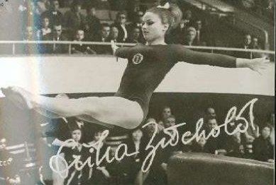

Erika Zuchold (GDR)
1970 World V and B Champion
1968 and 1972 Olympic V Silver Medalist

Medal Total
Olympic Games: 4
Silver, 1 Bronze
World Championships: 2
Gold, 3 Silver
European Championships: 2 Silver, 5 Bronze
Erika Barth was born on March 19, 1947 and began gymnastics in 1959 in Leipzig. At age 17 (at the 1964 GDR Championships - which she won!) she became the first gymnast to perform a flip-flop on the balance beam. On track to lead a unified German team at the 1964 Tokyo Olympics, she tore her Achilles tendon just prior to the Games. Erika went on to compete at the 1968 and 1972 Olympics, winning a total of 5 medals. In 1966 she married Dieter Zuchold, a cyclist from Leipzig. Dieter died in 2014, and in 2015 Erika moved to Paraguay where her mother and sister lived. She died on August 22, 2015.
Competition Results
1962 1963 This page was created on December
27, 2004 and was last updated on February 24, 2021.
Jr. CSSR-GDR Dual Meet: 2nd Team, 5th AA
Jr. FDJ Cup: 1st AA
Jr. GDR Championships: 1st AA
Bucharest International: 6th AA, 2nd V
DTV Cup: 7th AA
FDJ Cup: 1st Team, 1st AA
GDR Championships: 4th V, 6th FX
GDR-POL Dual Meet: 1st Team, 3rd AA
SC Leipzig-SC Chemie Halle: 1st Team, 2nd AA
1964
BUL-GDR Dual Meet: 1st Team, 1st AA
CSSR-GDR Dual Meet: 2nd Team, 2nd AA
GDR Championships: 1st AA, 1st B, 1st FX, 2nd UB, 4th V
GDR-USSR Dual Meet: 1st Team, 2nd AA
Krakow International: 3rd AA
Olympic Qualification Series Final: 1st AA
POL-GDR-HUN: 1st Team, 3rd AA
1965
GDR Championships: 2nd AA, 1st V, 3rd B
Halle-Leipzig-Budapest-Sofia Meet: 3rd AA
1966
GDR Championships: 1st AA, 1st V, 1st B, 2nd FX, 6th UB
POL-GDR Dual Meet: 1st Team, 1st AA
RSFSR-GDR Dual Meet: 1st Team, 1st AA
SWE-GDR Dual Meet: 1st Team, 2nd AA
Tbilisi International: 5th AA
World Championships: 4th Team, 4th AA, 2nd V
Yerevan International: 3rd AA, 1st UB, 4th VT, 5th FX
1967
DTV Cup: 2nd AA
European Championships: 5th AA, 2nd V, 6th B
FIN-GDR Dual Meet: 1st Team, 1st AA
GDR Championships: 2nd AA, 1st V, 1st B, 1st FX, 2nd UB
GDR-ROM Dual Meet: 1st Team, 2nd AA
GDR-SWE Dual Meet: 1st Team, 8th AA
GDR-USSR Dual Meet: 1st Team, 1st AA, 1st V, 2nd UB, 2nd FX
1968
DTV Cup: 1st AA
GDR-BUL Dual Meet: 1st Team, 1st AA
GDR Championships: 1st AA, 1st B, 1st FX, 2nd V, 2nd UB
GDR-FRA Dual Meet: 1st Team, 2nd AA
Leipzig-Budapest Dual Meet: 1st Team, 1st AA
Olympic Games: 3rd Team, 4th AA, 2nd V, 5th UB, 6th B
SWE-GDR Dual Meet: 1st Team, 1st AA
1969
DTV Cup: 2nd AA, 2nd V, 2nd UB, 2nd FX
European Championships: 3rd AA, 2nd V, 4th UB, 5th B,
5th FX
GDR Championships: 2nd AA, 2nd V, 2nd UB, 2nd FX
GDR-SWE Dual Meet: 1st Team, 2nd AA, 1st VT, 1st FX, 2nd UB, 2nd BB
GDR-USSR Dual Meet: 2nd Team, 1st AA
Leipzig-Kiev Dual Meet: 2nd Team, 1st AA
USSR-GDR-ROM: 1st Team, 3rd AA, 2nd UB, 2nd B, 3rd V, 5th FX
1970
World Championships: 2nd Team, 2nd AA, 1st V, 1st
B, 6th UB
1971
European Championships: 3rd AA, 3rd V, 3rd B, 3rd
FX, 5th UB
1972
GDR Championships: 2nd AA, 1st V, 1st UB, 2nd B
GDR-USSR Dual Meet: 1st Team, 4th AA
NOR-GDR Dual Meet: 1st Team, 3rd AA
Olympic Games: 2nd Team, 4th AA, 2nd V, 2nd UB,
6th B
SWE-GDR Dual Meet: 1st Team, 1st AA
© Gymn Forum